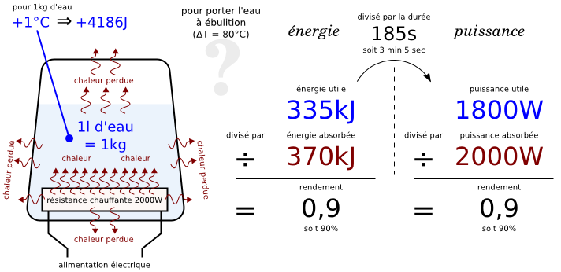
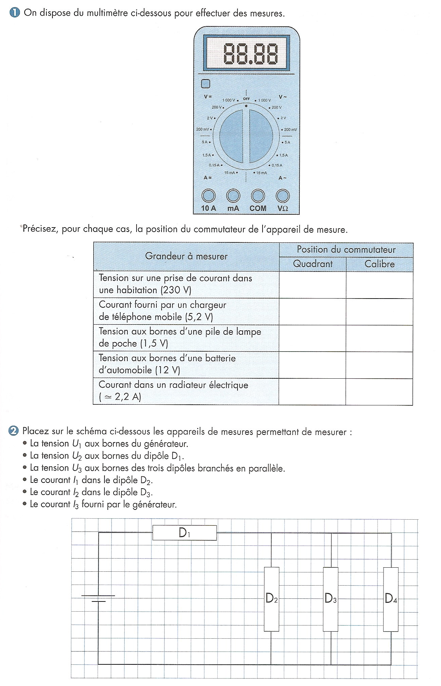

Module THÉORIE S1-T2 · 2 hLes grandeurs électriques U, I, R
SéquenceS1 · sem. 1-4
Nom________________
Prénom________________
Date________________
Positionnement01234
Tâches
Pas de tâche d'atelier ce jour — module théorie de classe entière
Ce que je vais apprendre
Les 3 grandeurs électriques (tension U, intensité I, résistance R) : leur nom, leur unité, l'appareil qui les mesure, et la formule qui les relie (loi d'Ohm)
Savoir-être
Observer avant de répondre · lire une valeur avec rigueur · honnêteté de mon auto-positionnement
Compétence
Découverte — non noté ce cours prépare directement le module atelier S1-E2 (montages et multimètre) : vous y mesurerez vous-même ces grandeurs
Accroche
Regardez ces deux objets : une bouilloire électrique, et la plaque signalétique d'un moteur électrique. Sur
chacun, il y a des chiffres accompagnés de lettres : V, A, W, Hz, Ω...

Une bouilloire électrique — sa résistance chauffante indique « 2000 W ».La plaque signalétique d'un moteur électrique — plusieurs colonnes de chiffres.
Question de départ — D'après vous, que veulent dire ces lettres (V, A, W,
Hz, Ω) ? Notez vos idées, même si vous n'êtes pas sûr(e) — on y reviendra à la fin du cours.
DÉCOUVERTE — le multimètre affiche trois grandeurs différentes
Sur un chantier, l'outil qui sert à lire les grandeurs électriques s'appelle le
multimètre (« multi » = plusieurs, « mètre » = qui mesure). Le même appareil peut afficher trois
grandeurs différentes, sans jamais les confondre :
Les 3 grandeurs électriques
1. La tension, symbole U, unité le Volt (symbole V) — mesurée avec un
voltmètre (ou le multimètre réglé en position V).
2. L'intensité, symbole I, unité l'Ampère (symbole A) — mesurée avec un
ampèremètre (ou le multimètre réglé en position A).
3. La résistance, symbole R, unité l'Ohm (symbole Ω) — mesurée avec un
ohmmètre (ou le multimètre réglé en position Ω).
Observation 1 — Regardez le cadran du multimètre ci-dessous
(D'après : préparation du module S1-E2). Combien de zones de réglage différentes voyez-vous ? D'après
vous, à quoi correspondent les lettres V, A et Ω sur ce cadran ?

Le cadran d'un multimètre — c'est CET appareil que vous utiliserez en atelier S1-E2.
La bouilloire de l'accroche chauffe l'eau grâce à sa résistance chauffante.
Quand un courant électrique (une intensité I) traverse un conducteur, il produit de la chaleur
(D'après : Exercice n°2, S4-Électricité).
Question — D'après vous, si on augmente l'intensité I qui traverse une
résistance chauffante, la chaleur produite augmente-t-elle ou diminue-t-elle ?
La loi d'Ohm — la formule qui relie U, I et R
Les trois grandeurs de la feuille 1 ne sont pas indépendantes : une formule les
relie. C'est la loi d'Ohm :
La loi d'Ohm : U = R × I (D'après : « Loi d'Ohm », F. Henninot).
Observation 2 — D'après le nom « résistance », pensez-vous qu'une
résistance élevée facilite ou freine le passage du courant ?
Un clin d'œil pour le froid — Sur ce même schéma, on voit qu'il existe une
formule presque identique en thermique : ΔTab = Rther × Φ (la différence de température,
au lieu de la tension ; le flux de chaleur, au lieu de l'intensité ; la résistance thermique, au lieu de la
résistance électrique). Vous retrouverez cette idée de « résistance qui s'oppose au passage de quelque chose »
plus tard dans votre formation, appliquée à la chaleur (isolation, parois froides).
Voici une vraie plaque signalétique de moteur électrique
(D'après : Exercice n°1, S4-Électricité). Elle indique plusieurs grandeurs, pour différentes tensions
d'alimentation possibles. Répondez en lisant la ligne où la tension est 440 V (fréquence 60 Hz).
Plaque signalétique d'un moteur Leroy Somer LS 90L-T.
Grandeur à relever (ligne 440 V)
Valeur lue
1. Fréquence
2. Intensité absorbée
3. Puissance mécanique nominale
4. Poids du moteur
5. Vitesse nominale
Question 6 — Parmi les 5 valeurs ci-dessus, entourez ou soulignez celles
qui sont des grandeurs électriques (tension, intensité).
Exercice 2 — les unités du multimètre
Complétez ce tableau avec ce que vous avez appris en feuille 1
(D'après : TP 04 – multimètre) :
Fonction du multimètre
Grandeur (symbole)
Unité
Symbole de l'unité
Voltmètre (position V)
Ampèremètre (position A)
Ohmmètre (position Ω)
Un exemple réel : sur un moteur triphasé, un professionnel a mesuré au multimètre
la résistance de chacun des 3 enroulements. Les trois affichaient 7,3 Ω
(D'après : TP 04 – multimètre, correction). Comme les 3 valeurs sont identiques, le moteur a été jugé en
bon état.
Question — Avec quelle fonction du multimètre (parmi V, A, Ω) a-t-on
obtenu cette valeur de 7,3 Ω ?
Pour chaque situation ci-dessous, dites si c'est une tension (U) ou une
intensité (I), et rappelez son unité (D'après : préparation du module S1-E2) :
Situation
U ou I ?
Unité
Tension sur une prise de courant domestique (230 V)
Tension délivrée par un chargeur de téléphone mobile (5,2 V)
Tension aux bornes d'une pile de lampe de poche (1,5 V)
Tension aux bornes d'une batterie d'automobile (12 V)
Vous avez vu en feuille 2 la formule U = R × I. On peut l'écrire de deux
autres façons pour calculer I ou pour calculer R. Complétez :
I = ____________ ÷ ____________
R = ____________ ÷ ____________
Question a — Si la résistance R d'un appareil augmente, et que
l'intensité I qui le traverse reste la même, la tension U nécessaire augmente-t-elle ou diminue-t-elle ?
(Utilisez la formule U = R × I pour répondre.)
Question b — Sur l'enroulement du moteur mesuré en feuille 3
(R = 7,3 Ω), quelle formule utiliseriez-vous pour calculer l'intensité I si vous connaissiez la tension U à
ses bornes ? (Donnez la formule, sans chercher à calculer un résultat.)
Question c — Pourquoi, à votre avis, ne peut-on pas mesurer une
résistance avec un ohmmètre pendant que le circuit est sous tension ? (Aide : relisez le TP 04 – multimètre.)
Pas de calcul numérique complet aujourd'hui — En atelier (module
S1-E2), vous allez mesurer vous-même une vraie tension U, une vraie intensité I et une vraie résistance
R, sur un montage réel, avec le multimètre. Vous pourrez alors vérifier la loi d'Ohm avec VOS propres valeurs
mesurées.
Ce cours n'est pas noté sur École Directe : il
prépare le module atelier S1-E2, où vous mesurerez vous-même ces grandeurs avec un multimètre réel.
D'après : fiche d'activité
« Centre d'intérêt n°1 — Découverte d'un circuit électrique » (F. Henninot, S4-Électricité, CAP IFCA) ;
« Exercice n°1 » et sa correction — plaque signalétique moteur Leroy Somer LS 90L-T (F. Henninot) ;
« Exercice n°2 » et sa correction — effet du courant dans un conducteur (F. Henninot) ; « TP 04 – multimètre »
et sa correction — fonctions, unités, mesure de résistance 7,3 Ω (F. Henninot, 2nde TNE) ; image « bouilloire
électrique » (F. Henninot, S4-Électricité) ; schéma « Loi d'Ohm » électrique et thermique (F. Henninot) ;
cadran de multimètre et tableau de grandeurs réelles, préparés pour le module S1-E2 (F. Henninot).